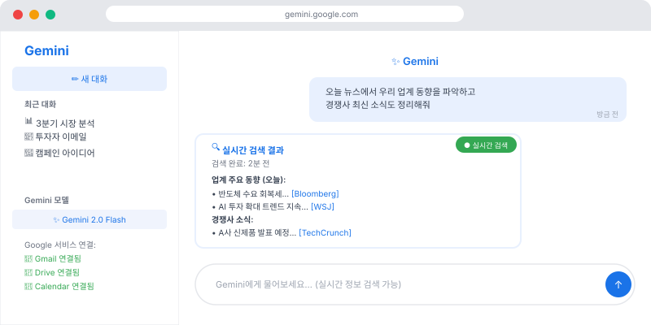

✨ "Google을 이미 쓰고 있다면 Gemini가 최선"
Gmail, Google Docs, Google Sheets, Google Drive — 이미 Google 제품을 업무에 쓰고 계신가요? 그렇다면 Gemini는 가장 자연스럽게 연동되는 AI예요. 추가 설정 없이도 Google 서비스 안에서 Gemini를 바로 쓸 수 있어요.
💡 Gemini의 강점: Google 생태계 통합, 실시간 웹 검색, 멀티모달(텍스트+이미지+음성) 처리. 특히 최신 정보가 필요할 때 Gemini가 강해요.
🚀 Gemini 시작하기
- 브라우저에서 gemini.google.com 접속
- Google 계정으로 로그인 (새로 만들 필요 없어요!)
- 무료로 Gemini 사용 가능 (Gemini Advanced는 유료)

🌐 Gemini의 핵심 강점 1: 실시간 검색
Claude나 ChatGPT는 특정 시점까지의 정보만 알지만, Gemini는 실시간으로 웹을 검색해서 최신 정보를 가져올 수 있어요.
활용 예시
- "오늘 환율이 얼마야? 달러, 엔화 기준으로"
- "최근 3개월 동안 우리 업계(SaaS) 주요 뉴스를 요약해줘"
- "경쟁사 A기업이 최근에 새로 발표한 것들이 있어?"
- "이번 주 주요 IT 트렌드를 5개로 요약해줘"
⚠️ 최신 정보도 검증이 필요해요: 실시간 검색을 한다고 해도 AI가 정보를 잘못 해석할 수 있어요. 중요한 사실은 원출처를 직접 확인하세요.
🖼️ Gemini의 핵심 강점 2: 멀티모달
텍스트뿐 아니라 이미지, 문서, 음성도 함께 처리할 수 있어요. "이 사진을 보고 설명해줘"부터 "이 이미지의 텍스트를 추출해줘"까지 가능해요.
이미지 활용 예시
- 제품 사진을 올리고 "이 제품의 마케팅 카피 5가지 제안해줘"
- 명함 사진을 올리고 "이 명함에서 연락처 정보를 텍스트로 추출해줘"
- 차트/그래프 이미지를 올리고 "이 데이터에서 핵심 인사이트를 뽑아줘"
- 경쟁사 웹사이트 스크린샷을 올리고 "우리 사이트와 비교해서 차이점을 말해줘"
📱 Google Workspace에서 Gemini 쓰기
Google 앱 안에서 직접 Gemini를 호출할 수 있어요 (Workspace 플랜 필요).
Gmail에서 Gemini
- 이메일 작성 화면에서 ✨ 아이콘 클릭 → "Help me write" 기능
- "이 주제로 공식적인 이메일 초안 작성해줘"
- 받은 이메일에서 "Summarize" 버튼으로 요약
Google Docs에서 Gemini
- 문서 작성 중 사이드 패널에서 Gemini 호출
- "이 섹션을 더 설득력 있게 다시 써줘"
- "이 보고서의 핵심 주장을 3줄로 요약해줘"
Google Sheets에서 Gemini
- "이 데이터를 분석해서 트렌드를 알려줘"
- "이 작업을 하는 수식을 만들어줘"
- "이 데이터를 바탕으로 차트 추천해줘"
💡 Google Workspace 없어도 괜찮아요: Workspace 플랜이 없더라도 gemini.google.com에서 똑같은 작업을 할 수 있어요. 다만 해당 앱 안에서 바로 쓰는 편의성 차이만 있어요.
🆚 Gemini vs Claude — 언제 뭘 쓸까?
Claude가 더 좋은 상황
- 긴 문서 분석 (PDF, 계약서)
- 세밀한 글쓰기 스타일 조정
- 복잡한 논리적 추론
- 코드 작성 및 디버깅
Gemini가 더 좋은 상황
- 최신 정보·뉴스 검색
- Google 앱과 연동 작업
- 이미지 분석
- 실시간 정보 확인